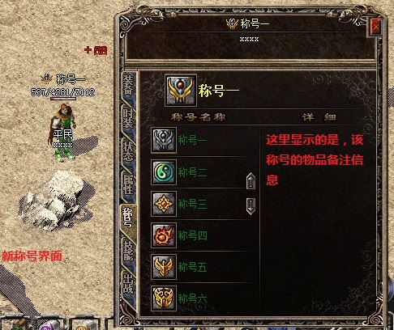
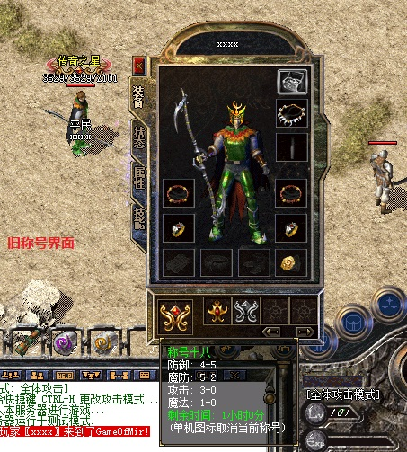
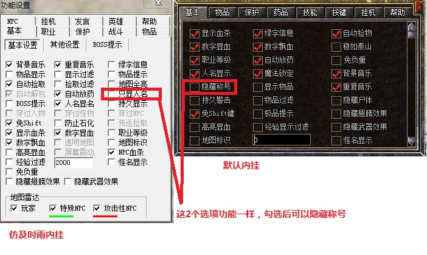

称号系统



增加称号：
第一步：首先选择称号的图库。在M2里设置(选项-功能设置-其他控制-称号素材读取设置)，素材的排列规则可以参考盛大的ui1.wzl里面的，从690~739都是称号的图片，每个称号需要5个图片，第一个图片是外观显示的，第二三是界面显示的，第四五是称号激活显示用的
第二步：在物品数据库里增加称号
-------------------------------------------------------------------------------------------
称号功能，增加减少称号物品DB时，请注意Shape的连续性
StdMode 无要求可以随意
Name 称号的名称，该名称外观是否显示，由Reserved字段控制
Shape 称号编号，触发用的
Color 颜色 0~255
Reserved 显示DB中的名字（有部分图自带了名字，不显示DB的名字可以写上1)
Anicount 大于0时，无需设置为当前称号，属性就可以叠加到人物。等于0时，需要设置为当前称号，该称号的属性才会叠加到人物
Looks 称号图片的开始位置
DuraMax 可使用时间，单位小时
其他就等同于装备属性
玩家改变使用称号或刚上线有使用到称号，触发：QFunction的
人物：[@TitleChanged_XX]
XX代表物品DB中的Shape
玩家取消使用称号时，触发：QFunction的
人物：[@Untitled_XX]
XX代表物品DB中的Shape
比如
[@TitleChanged_1]
#IF
#ACT
伟大的【沙巴克城主】上线了
-------------------------------------------------------------------------------------------
第三步：使用脚本命令增加人物称号
称号对应NPC命令:
检测人物是否有某个称号
CHECKTITLE 称号名称(也就是在物品数据库增加的那个称号物品名称)
增加人物称号
CONFERTITLE 称号名称(也就是在物品数据库增加的那个称号物品名称)
删除人物称号
DEPRIVETITLE 称号名称(也就是在物品数据库增加的那个称号物品名称)
[@增加称号]
#IF
CHECKFENGHAOCOUNT > 29
#ACT
SENDMSG 6 已经有了所有称号
BREAK
#IF
NOT CHECKTITLE 巅峰战神 //检测没有有这个称号
#ACT
CONFERTITLE 巅峰战神 //授予称号
#ELSEACT
SENDMSG 6 已经有了该称号
[@删除称号]
#IF
CHECKTITLE 巅峰战神
#ACT
DEPRIVETITLE 巅峰战神 //删除称号
;DEPRIVETITLE ALL //删除所有称号
功能：检查玩家所有称号的数量
格式：CHECKFENGHAOCOUNT 操作符(<,>,=) 数量(0-30)
称号改变属性及时刷新
称号物品DuraMax=0时，称号可以无限时间使用
赋予新称号，将标注为未使用状态，激活称号后才开始计时
-------------------------------------------------------------------------------------------
称号最多支持30个
-------------------------------------------------------------------------------------------
以下数据是按照盛大ui1.wzl里面的称号做的数据
573;称号一;70;0;20;0;0;0;690;0;4;5;2;3;0;1;0;0;0;0;1;40;35000;5;251;0;0;;0;0;0;0;0;0;0;0;0;0;0;0;0;0;0;0;0;0;0;0;
574;称号二;70;0;20;0;0;0;695;0;4;5;2;3;0;1;0;0;0;0;1;40;35000;5;252;0;0;;0;0;0;0;0;0;0;0;0;0;0;0;0;0;0;0;0;0;0;0;
575;称号三;70;0;20;0;0;0;700;48;4;5;2;3;0;1;0;0;0;0;1;40;35000;5;253;0;0;;0;0;0;0;0;0;0;0;0;0;0;0;0;0;0;0;0;0;0;0;
576;称号四;70;0;20;0;0;0;705;0;4;5;2;3;0;1;0;0;0;0;1;40;35000;5;251;0;0;;0;0;0;0;0;0;0;0;0;0;0;0;0;0;0;0;0;0;0;0;
577;称号五;70;0;20;0;0;0;710;0;4;5;2;3;0;1;0;0;0;0;1;40;35000;5;255;0;0;;0;0;0;0;0;0;0;0;0;0;0;0;0;0;0;0;0;0;0;0;
578;称号六;70;0;20;0;0;0;715;0;4;5;2;3;0;1;0;0;0;0;1;40;35000;5;249;0;0;;0;0;0;0;0;0;0;0;0;0;0;0;0;0;0;0;0;0;0;0;
579;称号七;70;;0;20;0;0;720;0;4;5;5;2;3;0;1;0;0;0;0;1;40;35000;250;255;0;0;;0;0;0;0;0;0;0;0;0;0;0;0;0;0;0;0;0;0;0;
580;称号八;70;;0;20;0;0;725;0;4;5;5;2;3;0;1;0;0;0;0;1;40;35000;252;255;0;0;;0;0;0;0;0;0;0;0;0;0;0;0;0;0;0;0;0;0;0;
581;称号九;70;;0;20;0;0;730;0;4;5;5;2;3;0;1;0;0;0;0;1;40;35000;5;255;0;0;;0;0;0;0;0;0;0;0;0;0;0;0;0;0;0;0;0;0;0;
582;称号十;70;;0;20;0;0;735;0;4;5;5;2;3;0;1;0;0;0;0;1;40;35000;5;255;0;0;;0;0;0;0;0;0;0;0;0;0;0;0;0;0;0;0;0;0;0;
583;称号十一;70;;0;20;0;0;1240;0;4;5;5;2;3;0;1;0;0;0;0;1;40;35000;5;255;0;0;;0;0;0;0;0;0;0;0;0;0;0;0;0;0;0;0;0;0;0;
584;称号十二;70;;0;20;0;0;1245;0;4;5;5;2;3;0;1;0;0;0;0;1;40;35000;5;255;0;0;;0;0;0;0;0;0;0;0;0;0;0;0;0;0;0;0;0;0;0;
585;称号十三;70;;0;20;0;0;1250;0;4;5;5;2;3;0;1;0;0;0;0;1;40;35000;5;255;0;0;;0;0;0;0;0;0;0;0;0;0;0;0;0;0;0;0;0;0;0;
586;称号十四;70;;0;20;0;0;1255;0;4;5;5;2;3;0;1;0;0;0;0;1;40;35000;5;255;0;0;;0;0;0;0;0;0;0;0;0;0;0;0;0;0;0;0;0;0;0;
587;称号十五;70;;0;20;0;0;1260;0;4;5;5;2;3;0;1;0;0;0;0;1;40;35000;5;255;0;0;;0;0;0;0;0;0;0;0;0;0;0;0;0;0;0;0;0;0;0;
588;称号十六;70;;0;20;0;1;1265;0;4;5;5;2;3;0;1;0;0;0;0;1;40;35000;5;255;0;0;;0;0;0;0;0;0;0;0;0;0;0;0;0;0;0;0;0;0;0;
589;称号十七;70;;0;20;0;0;1270;0;4;5;5;2;3;0;1;0;0;0;0;1;40;35000;5;255;0;0;;0;0;0;0;0;0;0;0;0;0;0;0;0;0;0;0;0;0;0;
590;称号十八;70;;0;20;0;1;1275;1;4;5;5;2;3;0;1;0;0;0;0;1;40;35000;5;255;0;0;;0;0;0;0;0;0;0;0;0;0;0;0;0;0;0;0;0;0;0